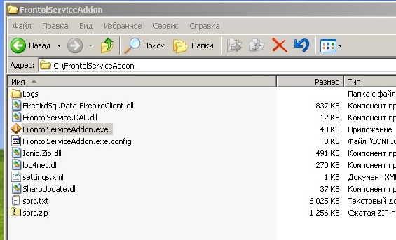
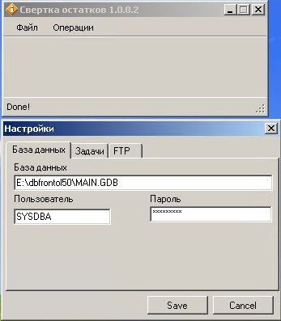
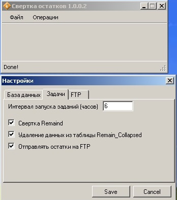
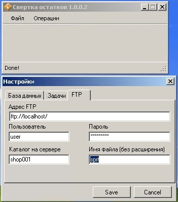
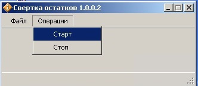
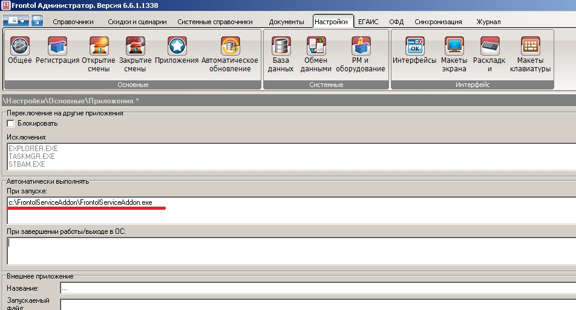

Распакуйте zip файл в любой каталог по вашему усмотрению например c:\FrontolServiceAddon Запустите файл FrontolServiceAddon.exe.
Перейдите в меню настройки задайте подключение в базе данных фронтол.
Настройте задачи. Измените сверки свертки если вам это неободимо по умолчанию каждые 6 часов.
Если существует необходимость получать справочник товаров, остатки, цены и минимальные цены, можно настроить подключение к FTP серверу для отправки текстового файла. Эта функция аналогична выгрузке справочника из Штрих-М Кассир Запрос реквизитов
Далее можно запустить, остановить свертку остатков вручную Операции Запустить Остановить.
Или дождаться запуска по таймеру. Свертка и выгрузка данных по умолчанию выполняется каждые 6 часов. Утилиту можно закрыть она свернется в Tray (при нажатии на крестик происходит свертка в Tray). Что бы закрыть утилиту зайдите в меню файл Выход.
Надеюсь эта утилита поможет избежать роста базы данных, и вам не придется регулярно удалять данные из Remaind
Утилиту необходимо установить в автозагрузку Frontol
